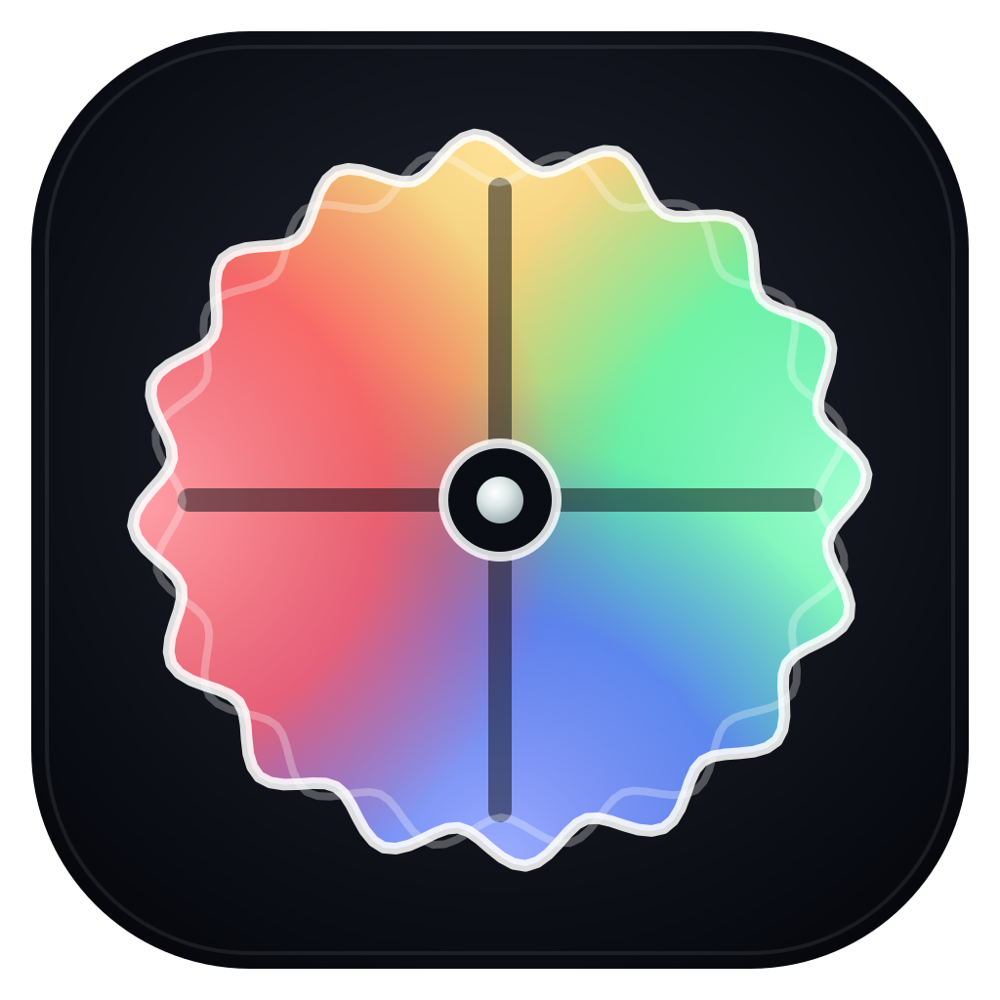
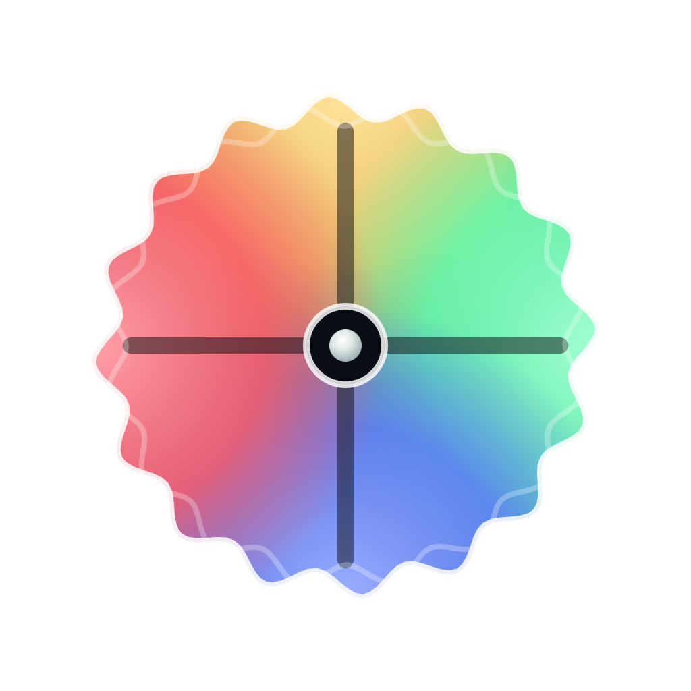

Experiment Planner & Experiment Runner
Choose an app. The online versions are in development.

Prepare your study, arrange stimuli and questionnaires, and save an experiment recipe.
Open a saved recipe, prepare a participant session, and follow the experiment sequence.